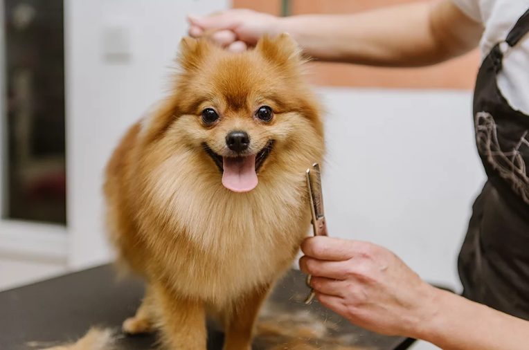
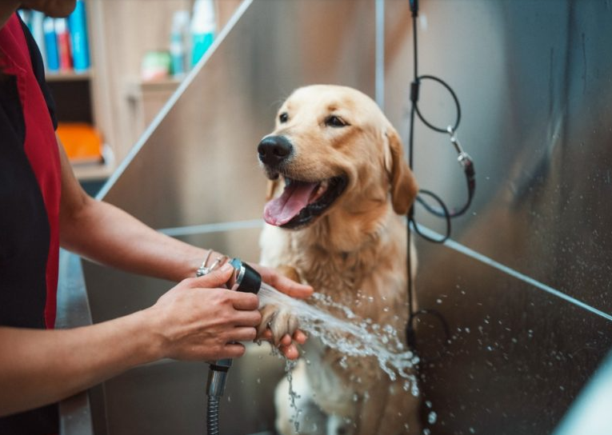

Tosa
Utilizamos aparelhos de qualidade para que a retirada dos pelos, seja menos desagradável ao seu bichinho.

Banho
Neutralizamos os odores.
Aplicamos o shampoo para reforçar a limpeza dos pêlos.
Uso de condicionador.
Uso do desembaraçador que facilita o desemblo e a retirada de nós.
Perfume,usado após a secagem para garantir um toque agradável ao animal.

Veterinária
Realizamos procedimentos pós e pré operatório.Temos médicos veterinários especializados na área.

Prevenção
Fazemos exames específicos e bem intensivos para detectar toda e qualquer anomalia, afim de evitar futuras doenças.